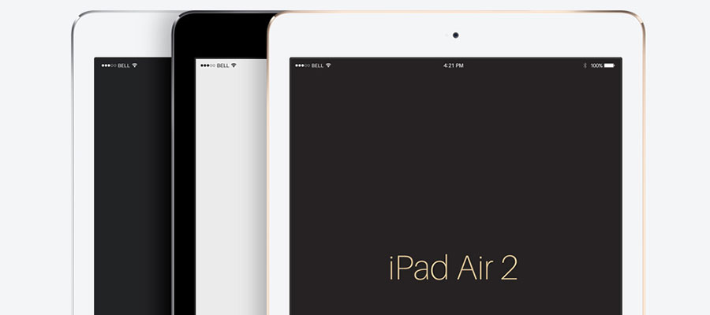
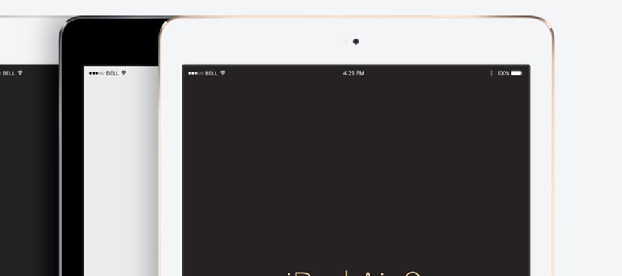

<!DOCTYPE html>
<html>
</html>
<head>
  <meta charset="utf-8">
  <meta http-equiv="X-UA-Compatible" content="IE=edge">
  <title>Samantha Whelpley Portfolio</title>
  <meta name="description" content="">
  <meta name="viewport" content="width=device-width, initial-scale=1">
  <meta name="robots" content="all,follow">
  <!-- Bootstrap CSS-->
  <link rel="stylesheet" href="vendor/bootstrap/css/bootstrap.min.css">
  <!-- Font Awesome CSS-->
  <link rel="stylesheet" href="vendor/font-awesome/css/font-awesome.min.css">
  <!-- Google fonts - Roboto-->
  <link rel="stylesheet" href="https://fonts.googleapis.com/css?family=Roboto:400,300,700,400italic">
  <!-- owl carousel-->
  <link rel="stylesheet" href="vendor/owl.carousel/assets/owl.carousel.css">
  <link rel="stylesheet" href="vendor/owl.carousel/assets/owl.theme.default.css">
  <!-- theme stylesheet-->
  <link rel="stylesheet" href="css/style.default.css" id="theme-stylesheet">
  <!-- Custom stylesheet - for your changes-->
  <link rel="stylesheet" href="css/custom.css">
  <!-- Favicon-->
  <link rel='shortcut icon' type='image/x-icon' href='favicon-sw.ico'>
  <!-- Tweaks for older IEs--><!--[if lt IE 9]>
    <script src="https://oss.maxcdn.com/html5shiv/3.7.3/html5shiv.min.js"></script>
    <script src="https://oss.maxcdn.com/respond/1.4.2/respond.min.js"></script><![endif]-->
</head>
<body>
  <div id="all">
    <div class="container-fluid">
      <div class="row row-offcanvas row-offcanvas-left"> 
        <!--   *** SIDEBAR ***-->
        <div id="sidebar" class="col-md-4 col-lg-3 sidebar-offcanvas">
          <div class="sidebar-content">
            <h1 class="sidebar-heading"> <a href="index.html">Samantha Whelpley</a></h1>
            <p class="sidebar-p">I am an Information Science student at the University of Pittsbugh passionate about web and mobile application design.</p>
            <p class="sidebar-p"></p>
            <ul class="sidebar-menu">
                <!-- Link-->
                <li class="sidebar-item"><a href="index.html" class="sidebar-link active">Home</a></li>
                <!-- Link-->
                <li class="sidebar-item"><a href="about.html" class="sidebar-link">About</a></li>
            </ul>
            <p class="social"><a href="https://www.linkedin.com/in/samanthawhelpley/" data-animate-hover="pulse" class="external linkedin"><i class="fa fa-linkedin"></i></a><a href="https://www.instagram.com/samjoy.cs/" title="" class="external instagram"><i class="fa fa-instagram"></i></a><a href="mailto: sjw86@pitt.edu" data-animate-hover="pulse" class="email"><i class="fa fa-envelope"></i></a><a href="https://docs.google.com/document/d/1f8Wy-V9LZ5hAuJfV4ogRY9ev7qK78L_PrHf7NF1aFcY/edit?usp=sharing" data-animate-hover="pulse" class="resume"><i class="fa fa-file-text"></i></a></p>
            <div class="copyright text-center text-md-left">
              <p class="credit">&copy;2019 Samantha Whelpley | Template by <a href="http://bootstrapious.com/portfolio-themes" class="external">Bootstrapious.com</a></p>
              <!-- Please do not remove the backlink to us, unless you support the development at http://bootstrapious.com/donate. It is part of the license conditions. Thanks for understanding :)        -->
            </div>
          </div>
        </div>
        <!--   *** SIDEBAR END ***  -->
        <!--   *** DETAIL ***-->
        <div class="col-md-8 col-lg-9 content-column white-background">
          <div class="small-navbar d-flex d-md-none">
            <button type="button" data-toggle="offcanvas" class="btn btn-outline-primary"> <i class="fa fa-align-left mr-2"></i>Menu</button>
            <h1 class="small-navbar-heading"> <a href="index.html">Samantha Whelpley</a></h1>
          </div>
          <div class="row">
            <div class="col-xl-10">
              <div class="content-column-content">
                <h1>Mobile app for Nourish'd</h1>
                <p class="lead">Nourish'd contracted a group of 6 iXperience interns to help them build a mobile app for their online store. Over the course of 4 weeks, we ultimately built an app connected with Shopify to simplify the process of buying juice cleanses/meal plans.</p>
                <div id="main-slider" class="owl-carousel owl-theme">
                  <div class="item"></div>
                  <div class="item"></div>
                  <div class="item"></div>
                </div>
                <!-- /#main-slider-->
                <p>We split the project into parts in order to spread the work among us equally and get it done as efficiently as possible.</p>
                <ol>
                  <li>Front-end/design</li>
                  <li>Content planning/company research</li>
                  <li>Back-end/API integration</li>
                </ol>
                <blockquote class="blockquote">
                  <p class="mb-0">I worked mainly on back-end, learning the Shopify Storefront API. I also did the research into actually building the app. By the end of the 4 weeks, I had a working version of the Android app downloaded on my phone. Once all of the API calls were completed, I also helped with other parts of the process, giving design input and contributing to debugging and testing.</p>
                </blockquote>
                <h2>Development Process</h2>
                <p>We began with the idea of builting a full-stack application for them from scratch - database and all. However, after communicating more with the marketing director, we learned about their dependence on Shopify and the significance that would have on our project. One of the main issues here was that there was no one with tech knowledge in this small business, and as interns we were still learning the right questions to ask. Communication struggles often caused us to get offcourse.</p>
                <p>Once we got the go ahead to work with the Shopify API, we also knew we wanted to guide users through the juice cleanse buying process, even allowing them to select their own combination of juices. We also had an idea of addng surveys that would recommend certain juices to you. From that, we created a simple tab layout. It evolved a lot over time as the business become more transparent about their preferences. It ultimately ended into 4 main sections.</p>
                <ul>
                  <li>Store - all the juices and cleanses can be purchased here, from custom cleanses to choices based on survey results</li>
                  <li>Learn - comprehensive information about the cleanse process and recommendations from Nourish'd</li>
                  <li>Tracker - customers can track their clease process and control reminder notifications; this will be where furture personalized account information is kept</li>
                  <li>Cart - all items set for checkout will appear here; checking out takes customer to an in-app browser and is done through Shopify</li>
                </ul>
                <p>The app is still a work in progress, currently on track to be launched. I am working remotely to add a reward program, user account login, and additional features when buying cleanses.</p>
              </div>
            </div>
          </div>
        </div>
      </div>
    </div>
  </div>
  <!-- JavaScript files-->
  <script src="vendor/jquery/jquery.min.js"></script>
  <script src="vendor/popper.js/umd/popper.min.js"> </script>
  <script src="vendor/bootstrap/js/bootstrap.min.js"></script>
  <script src="vendor/jquery.cookie/jquery.cookie.js"> </script>
  <script src="vendor/owl.carousel/owl.carousel.min.js"></script>
  <script src="vendor/masonry-layout/masonry.pkgd.min.js"></script>
  <script src="js/front.js"></script>
</body>